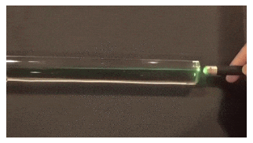

◉ Meios Físicos de Transmissão
➤ Estudo dos meios de transmissão usados nas redes de
computadores, além de técnicas usadas para ligar as
estações ao meio.
➤ Meio de transmissão = meio físico para propagação de
sinais de telecomunicações.
➤ Qualquer meio físico capaz de transportar informações
eletromagnéticas é passível de ser usado em redes de
computadores.
➤ Trata-se do caminho físico por onde trafegam
informações, entre um transmissor e um receptor.
◉ Características próprias do meio
➤ Banda passante
➤ Potencial para conexão ponto a ponto ou multiponto
➤ Atenuação do sinal
➤ Distância geográfica
➤ Imunidade a ruído
➤ Confiabilidade
➤ Custo (além do meio, custo de interfaces com a rede, e
estrutura adequada)
◉ Tipos de meios de transmissão
➤ Meios de transmissão “guiados”
▹ Par trançado
▹ Cabo coaxial
▹ Fibra ótica
➤ Meios de transmissão sem fio
▹ Radiodifusão
▹ Infravermelho
▹ Microondas
▹ Ondas de luz
◉ Par trançado
➤ Este cabo possui 4 pares de fios isolados;
➤ Dois fios são enrolados em espiral de forma a reduzir o
ruído e manter constantes as propriedades elétricas do
meio.
➤ Em seus experimentos, o físico Cristian Oersted comprovou
que um fio percorrido por uma corrente elétrica gera a sua
volta um campo magnético proporcional a intensidade da
corrente.

➤ Transmite sinais tanto analógicos quanto digitais.
➤ Utilizado em sistemas telefônicos
▹ Central de telefonia à casa do cliente
➤ Bastante utilizado em LANs
▹ Atinge distâncias típicas de 100 metros (com exceção
das redes 10G com cabos categoria 6, onde a distância
máxima cai para apenas 55 metros).
▹ Necessidade de repetidores a distâncias maiores.
➤ Banda passante alta
▹ Geralmente utilizado com transmissão em banda básica
▹ Atualmente suporta taxas de até 10Gbps
➤ Utilizado em conexões ponto-a-ponto
▹ Conector RJ-45
▹ Comunicação full-duplex
▹ EIA/TIA 568
➤ Vantagens
▹ Simplicidade;
▹ Baixo custo do cabo e dos conectores;
▹ Facilidade de manutenção.
➤ Desvantagens
▹ Necessidade de outros equipamentos como switchs;
▹ Susceptibilidade à interferência externas provocando
▹ ruídos e perda de informação (UTP);
▹ Problemas de atenuação.
➤Podem ser:
➤Não-blindados (UTP - Unshielded TP)
▹Mais susceptíveis a interferências eletromagnéticas.
➤Blindados (STP - Shielded TP)
▹Proteção contra interferências eletromagnéticas (ex: motores, ar condicionado etc.).
➤ Par Trançado
▹Par Trançado sem Blindagem (UTP)
▹Par Trançado com Blindagem (STP)
➤ Par Trançado UTP
▹ É o mais usado em redes de computadores;
▹ É de fácil manuseio e instalação;
▹ Baixo custo;
▹ Porém é suscetível a interferência eletromagnética externa;
▹ Curta distância, devido à atenuação de sinais.
◉ Par trançado blindados
➤ É envolvido por uma blindagem (malha metálica), que lhe
oferece uma proteção a mais contra interferências
eletromagnéticas.
▹ Os cabos blindados podem prestar bons serviços em ambientes com forte
interferência eletromagnética, como, por exemplo, grandes motores
elétricos ou grandes antenas de transmissão muito próximas.
➤ Possui melhor performance e pode atingir taxa de transferência
de dados mais alta.
➤ Elimina problema de diafonia (crosstalk)
➤ Porém possui custo mais elevado, além de ser menos flexível e
mais pesado que o UTP
▹ Mais difícil de fabricar e instalar.
➤ Classificados em diversos tipos que apresentam diferentes
características:
▹ Diâmetro do condutor
▹ Material utilizado na blindagem
➤ Dividem-se em 3 categorias:
▹ FTP (Foiled Twisted Pair);
▹ STP (Shilded Twisted Pair);
▹ SSTP (Screened Shielded Twisted Pair) ou SFTP (Screened
Foiled Twisted Pair)
➤ FTP (Foiled Twisted Pair)
▹ uma fina folha de aço ou de liga de alumínio
envolve todos os pares do cabo, protegendo-os
contra interferências externas, mas sem fazer
nada com relação ao crosstalk, ou seja, a
interferência entre os pares de cabos.
➤ STP (Shilded Twisted Pair)
▹ Usa uma blindagem individual para cada par de cabos.
Isso reduz o crosstalk e melhora a tolerância do cabo
com relação à distância, o que pode ser usado em
situações onde for necessário crimpar cabos fora do
padrão, com mais de 100 metros.
➤ SSTP (Screened Shielded Twisted Pair)
▹ Combinam a blindagem individual para cada par de
cabos com uma segunda blindagem externa,
envolvendo todos os pares, o que torna os cabos
especialmente resistentes a interferências externas;
▹ Eles são mais adequados a ambientes com fortes fontes
de interferências.
◉ Conector RJ-45
➤ Conector de 8 vias utilizado na terminação de cabos de par
trançado. Ambos UTP e STP utilizam conectores RJ-45.
Conector RJ-45 blindado
◉ Padronização
➤ A EIA/TIA (Electronic Industries Association/
Telecommunication Industry Association) estabeleceu dois
padrões internacionais: T568A e T568B.
➤ ATENÇÃO: Para se fazer um cabo direto usamos o padrão
T568A nas duas extremidades. Para se fazer um cabo
cross-over usamos o padrão T568A em uma extremidade e
o padrão T568B na outra.

➤ Um cabo direto é usado para ligar um computador a um
hub, switch ou outro dispositivo qualquer de rede.
➤ O cabo invertido ou crossover é utilizado em 2 situações
básicas:
▹ Conectar 2 PCs através da placa de rede, sem a
utilização de um hub ou switch
▹ Conexão entre equipamentos de rede específicos.
▹ Ex: um hub conectado a um roteador; em alguns
casos, conexão entre dois hubs, etc.
◉ Cabo Coaxial
➤ Núcleo de cobre circundado por um condutor externo em
malha
▹ Um material isolante separa os dois
➤ Esse tipo de cabo possui impedância (Z) e é medida em
ohms (Ω)
➤ Impedância = capacidade de um circuito de resistir ao
fluxo de uma determinada corrente elétrica quando se
aplica certa voltagem através dos seus terminais.
▹ É uma forma de medir a maneira como a eletricidade “viaja”
em cada elemento químico.
▹ Trata-se da soma de 3 grandezas = resistência elétrica,
reatância capacitiva e reatância indutiva.
▹ Influencia na reflexão de sinais entre 2 dispositivos conectados.
▹ Para LANs, seu valor padrão é de 50 Ω
➤ Vantagens
▹ Melhor blindagem do que o par trançado;
▹ Por ser blindado, pode ser mais longo que cabos de par trançados comuns.
▹ Atinge maiores distâncias e velocidades mais altas;
▹ Mais barato que o par trançado blindado;
▹ Melhor imunidade contra ruídos e contra atenuação do sinal que o par trançado sem blindagem;
▹ Pode transmitir sinais de alta largura de banda.
➤ Desvantagens
▹ Mais caro que o par trançado sem blindagem;
▹ A ligação ao cabo também é mais cara;
▹ Por não ser flexível o suficiente, quebra e apresenta mau contato
com facilidade;
▹ Dificulta a instalação (dificuldade depassá-lo em canaletas e
dutos);
▹ Dependendo da topologia, caso o cabo quebre ou apresente mau
contato, o segmento inteiro da rede deixa de funcionar;
▹ Necessita terminador de impedância.
➤ Classificação dos cabos
➤ Cabo coaxial fino (10Base2) – RG-58
▹ Maleável e, portanto, fácil de instalar
▹ Utiliza conectores BNC (T)
▹ Utilizado em Redes Ethernet (Banda Básica)
▹ Taxas de transmissão de 10 Mbps
▹ Segmentos de 200 metros (na verdade, 185m)
▹ Pode-se utilizar repetidores
➤ Cabo coaxial grosso (10Base5) – RG-8
▹ Menos flexível, o que dificulta a instalação
▹ Mais resistente a interferências eletromagnéticas e sofre menos com a atenuação
▹ Pode utilizar também conector vampiro
▹ Redes de banda larga (TV e Internet a cabo)
▹ Comprimento maior que o coaxial fino (500m)
◉ Fibra Óptica
➤ Filamentos flexíveis fabricados em materiais transparentes,
como fibras de vidro ou plástico, e que são utilizadas como
meio de propagação da luz.
▹ Transmitem dados por meios de pulsos de luz (laser/ LED).
▹ O sinal é codificado no domínio de frequência do infravermelho (1012
a 1014Hz)
➤Imune a interferências eletromagnéticas e ruídos
▹ Sem necessidade de blindagens metálicas.
➤O sinal sofre menos atenuação.
▹ Assim, é possível usar cabos muito mais longos;
▹ Alcança maiores distâncias (dezenas de quilômetros) sem uso de repetidores.
➤Atingem altas taxas de transferência de dados.
▹ Suporta taxas de transmissão de terabytes.
➤Utilizada em conexões ponto a ponto ou multipontos.
➤ Aplicações:
▹ Redes de backbone
▹ Conexão de banda larga de alta velocidade à Internet
▹ Conexão de alta velocidade entre servidores e SAN (Storage Area Network)
▹ Cabos submarinos
▹ Aplicações militares e sensoriamento remoto
➤ Desvantagens:
▹ Instalação e manutenção são difíceis;
▹ Seu custo é bem maior em comparação com cabos metálicos;
▹ Trata-se de um meio frágil, que pode se romper com facilidade;
▹ Necessita de hardware de conexão e transmissão especial;
▹ Unidirecional. Necessita de duas fibras para Tx e Rx.
Funcionamento:
➤ As fibras ópticas são formadas por um núcleo transparente de alto
índice de refração revestido por camadas plásticas transparentes
com índices de refração mais baixos que os do núcleo.
➤ O fenômeno físico que permite sua utilização é a reflexão interna
total da luz.
➤ Para que ocorra a sua reflexão interna total, a luz é emitida para o
interior do núcleo da fibra óptica em um ângulo mínimo de
incidência, chamado de ângulo limite (ou ângulo crítico).
➤Tal ângulo permite que a luz sofra sucessivas reflexões internas no
interior da fibra óptica sem que ela escape de lá.

➤ A fibra óptica funciona através da refexão total da luz, que vai "recocheteando" nas paredes
da fibra até chegar ao lado oposto da mesma
➤ Assim, a luz pode ser propagada por longas distâncias, com perdas
mínimas em sua intensidade
▹ Acompanham o formato em que os cabos de fibra óptica estão
dispostos.

➤ Componentes de um sistema ótico
➤ Fonte de luz
▹ Diodo emissor de luz (LED)
▹ Lazer
➤ Meio de transmissão
▹ Fibra de vidro ultrafina
➤ Detrctor
▹ Conversor ótico/elétrico (transciever)
➤ A transmissão de luz unidirecional, por isso, normalmente o uso de duas fibras
▹ Transmissão (Tx)
▹ Recepção (Rx)
➤ Uso de novas técnicas para um link full-duplex em apenas uma fibra (WDM)
➤ Conectores mais comuns: ST, SC, LC
➤ Tipos de fibra
▹ Fibra Monomodo
A fibra monomodo é projetada para permitir que um único feixe de luz
percorra o núcleo da fibra. Essa fibra tem um diâmetro de núcleo
menor, tipicamente em torno de 9 a 10 micrômetros (µm). Devido ao
tamanho reduzido do núcleo, a luz se propaga em um único modo,
resultando em menos dispersão e atenuação do sinal. Isso permite
que a fibra monomodo transmita sinais em longas distâncias, com
velocidades e capacidades de largura de banda mais altas em
comparação com a fibra multimodo. É frequentemente utilizada
em aplicações de longa distância, como redes de longa distância
(WAN) e conexões de backbone.
▹ Fibra Multimodo
A fibra multimodo possui um diâmetro de núcleo maior em comparação
com a fibra monomodo, variando geralmente entre 50 e 62,5 µm. Essa
fibra permite que vários modos de luz se propaguem através do
núcleo, o que resulta em maior dispersão e atenuação do sinal em
comparação com a fibra monomodo. No entanto, ela é mais fácil
de ser conectada e tem um custo menor. A fibra multimodo é
frequentemente usada em distâncias mais curtas, como redes
locais (LAN) e aplicações de curta distância, como conexões
em edifícios ou campus. É adequada para aplicações que não
exigem longas distâncias ou altas velocidades.